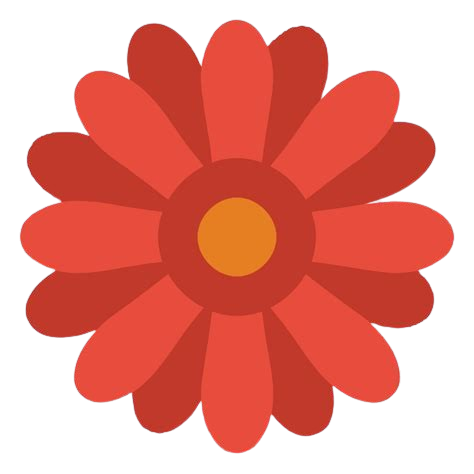

A refined Debian-based operating system with a modern desktop experience
The Flower Project is an integrated open-source initiative dedicated to developing a high-performance Linux desktop environment (Flower DE) and a specialized operating system. It combines Debian stability with a modern, cohesive user experience.
GPL-3.0